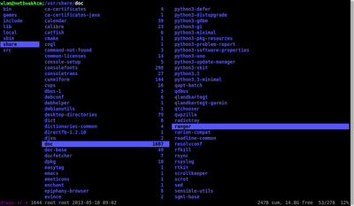
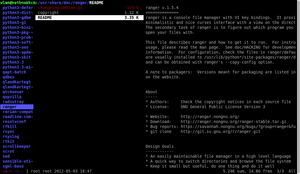

ranger
Dieser Artikel wurde für die folgenden Ubuntu-Versionen getestet:
Ubuntu 14.04 Trusty Tahr
Zum Verständnis dieses Artikels sind folgende Seiten hilfreich:
 Ranger
Ranger  ist ein mächtiger, in Python geschriebener Dateimanager für die Konsole [3]. Durch eine dreispaltige Darstellung ist er sehr übersichtlich. Die mittlere Spalte ist aktiv, in der linken wird das übergeordnete Verzeichnis angezeigt, während rechts eine Vorschau auf den Inhalt des aktiven Elements erscheint. Alle Operationen werden über Tastatur gesteuert. In der Standardbelegung werden dazu Kürzel ähnlich wie in Vim verwendet. Diese Kürzel können an die eigenen Bedürfnisse angepasst werden. Das Browsen in Tabs ist möglich. Durch Installation zusätzlicher Pakete[1] kann der Leistungsumfang des Programms erweitert werden.
ist ein mächtiger, in Python geschriebener Dateimanager für die Konsole [3]. Durch eine dreispaltige Darstellung ist er sehr übersichtlich. Die mittlere Spalte ist aktiv, in der linken wird das übergeordnete Verzeichnis angezeigt, während rechts eine Vorschau auf den Inhalt des aktiven Elements erscheint. Alle Operationen werden über Tastatur gesteuert. In der Standardbelegung werden dazu Kürzel ähnlich wie in Vim verwendet. Diese Kürzel können an die eigenen Bedürfnisse angepasst werden. Das Browsen in Tabs ist möglich. Durch Installation zusätzlicher Pakete[1] kann der Leistungsumfang des Programms erweitert werden.
Ranger eignet sich vor allem im Zusammenhang mit anderen Terminalprogrammen, kann aber auch im Kontext einer grafischen Oberfläche (und mit Maus-Unterstützung) genutzt werden.
Installation¶
 Ranger kann aus den Ubuntu-Paketquellen über folgendes Paket installiert werden [1]:
ranger (universe)
 mit apturl
mit apturl
Paketliste zum Kopieren:
sudo apt-get install ranger
sudo aptitude install ranger
Wichtige Tastaturkürzel¶
Ranger ist vollständig über die Tastatur zu bedienen. Die folgende Übersicht stellt eine Auswahl häufiger Operationen im Dateimanager zusammen:
| Tastaturkürzel | |
| Taste/n | Operation |
| ? , F1 | Hilfeseite anzeigen |
| 1 ? | Tastaturbefehle anzeigen |
| 2 ? | Konsolenbefehle anzeigen |
| J / K , ↓ / ↑ | abwärts/ aufwärts bewegen |
| H / L , ← / → | nach links/ rechts bewegen |
| ⇧ + H / ⇧ + L | einen Schritt zurück/ vor gehen |
| G H | ins home Verzeichnis wechseln |
| G / , G R | ins root Verzeichnis wechseln |
| F3 | Datei anzeigen |
| F4 | Datei bearbeiten |
| ⏎ | Datei/ Verzeichnis öffnen |
| R | öffnen mit |
| Markierung setzen/ entfernen | |
| V | markiert/ nicht markiert umkehren |
| U V | Markierung für alle Dateien aufheben |
| ⇧ V | Visueller Markiermodus (Alles, was berührt wird, markieren) |
| Y Y , F5 | kopieren |
| D D , F6 | ausschneiden |
| P P | einfügen |
| Entf | löschen (bei mehreren Dateien mit Bestätigung) |
| F8 | löschen (mit Bestätigung) |
| C W | umbenennen (neuer Dateiname) |
| I | umbenennen (ändern des aktuellen Dateinamens) |
| M X | ein als x benanntes Lesezeichen anlegen |
| ´ , ⇧ + # | Lesezeichen anzeigen |
| ´ X , ⇧ + # X | zum Lesezeichen X gehen |
| Z H | verborgene Dateien zeigen/ verbergen |
| / | suchen |
| N / ⇧ + N | nächsten/ vorherigen Treffer anzeigen |
| F | finden (springt zu Treffer, sobald Zeichenfolge eindeutig), ignoriert Groß-/ Kleinschreibung |
| O N | Sortierung nach Name ( O S - nach Größe, O M - nach Änderungsdatum ...) |
| : | Konsole von ranger öffnen |
| ! | Konsole mit dem Befehl :shell öffnen |
| C D | Konsole mit Befehl :cd öffnen (Namensergänzung durch Tab) |
| Esc , Strg + C | Konsole verlassen |
| ⇧ + S | Eine Shell im aktuellen Verzeichnis öffnen |
| F7 | Konsole mit :mkdir öffnen (= neues Verzeichnis anlegen) |
(100-777)
= | Dateirechte setzen (chmod) |
| G N , Strg + ⇧ + N | neuen Tab öffnen |
| Alt + 1 bis 9 | Tab mit der Nummer (1-9) öffnen |
| G T / G ⇧ + T , Tab ⇆ / ⇧ + Tab ⇆ | zu nächstem/ vorherigem Tab wechseln |
| G C , Strg + ⇧ + W | aktuellen Tab schließen (solange mehrere geöffnet sind) |
| F10 , Q | ranger schließen |
Kommandozeile (in ranger)¶
Durch : wird innerhalb von Ranger eine Kommandozeile geöffnet, in der weitere Funktionen zur Verfügung stehen. Zum Beispiel:
:bulkrename– Die Dateinamen markierter Dateien werden in einem Texteditor geöffnet und können dort angepasst werden, bevor die Änderungen auf die Dateinamen übertragen werden:cd– Wechsel des Verzeichnisses:filter– nur Dateien mit bestimmen Merkmalen anzeigen:mark<regexpr>– Dateien mit bestimmten Merkmalen markieren:mkdir– ein Verzeichnis erstellen:map <keysequence> <command>– Tastaturkürzel festlegen:touch– eine (leere) Datei anlegen
Mit
! öffnet sich eine Shell-Eingabezeile im aktiven Verzeichnis. Hier können die gewohnten Terminalbefehle zur Bearbeitung von Dateien verwendet werden. Durch
⇧ +
S wird eine eigene Instanz der Shell geöffnet. Nach deren Beendigung (
Strg +
D , exit) kehrt man zur letzten Einstellung zurück.

Erweiterungen¶
Textdateien werden in der rechten Spalte automatisch in einer Voransicht dargestellt. Damit auch pdf-Dateien dargestellt werden, muss poppler (pdf2txt) installiert sein. Zur Darstellung von html-Dateien muss ein Terminalbrowser vorhanden sein (lynx, elinks, w3m). Zu anderen Erweiterungen siehe z.B. Arch Linux Wiki .
Shortcuts anpassen¶
Um die Konfiguration anzupassen, wird mit:
ranger --copy-config=all
eine Kopie aller Konfigurationsdateien wird nach ~/.config/ranger/ kopiert und kann dort angepasst werden. Wenn nur die Tastaturkürzel bearbeitet werden sollen, reicht:
ranger --copy-config=rc
Zur Änderung der Shortcuts wird die Datei rc.conf bearbeitet. Um z.B. die Kürzel zur Verfügung zu haben, die in grafischen Dateimanagern üblich sind, wird in der Datei eingetragen
1 2 3 4 5 6 7 8 | map <C-c> copy
map <C-x> cut
map <C-v> paste
map <C-a> mark_files all=True toggle=True
map <F2> eval fm.open_console('rename ' + fm.env.cf.basename)
map <C-t> tab_new ~
map < history_go -1
map > history_go 1
|
Wenn <C-c> ( Strg + C ) zum Kopieren verwendet werden soll, müssen folgende Elemente auskommentiert (oder gelöscht) werden.
1 2 3 | # map <C-c> abort # copycmap <ESC> <C-c> # copytmap <ESC> q Q w <C-c> |
Einbinden von Datenträgern und Laufwerken¶
Anders als bei den grafischen Dateimanagern werden Datenträger von ranger nicht automatisch eingehängt. Sie müssen nach Öffnen der Shell ( ! ) manuell eingehängt werden (vgl. mount). Zur einfachen Einbindung von Datenträgern ohne Rootrechte eignet sich pmount. Netzwerklaufwerke können per gvfs-mount eingebunden werden.
Problembehebungen¶
Ubuntu 14.04: Failed to run: ['sensible-paper', '/tmp/tmpXYZ']¶
Ranger verwendet für die Darstellung einiger (programmeigenen) Textinhalte das Werkzeug sensible-pager aus dem Paket sensible-utils (main), das im Installationsumfang von Ubuntu enthalten ist. In der Version von Ranger in 14.04 wurde allerdings ein Tippfehler über drei Python-Dateien kopiert, wodurch statt sensible-pager versucht wird den Befehl sensible-paper auszuführen. Die betroffenen Dateien mitsamt Pfad und Zeilennummer kann man sich mit folgendem Befehl [3] ausgeben lassen:
grep -Hnr sensible-paper /usr/share/ranger/*
usr/share/ranger/ranger/__init__.py:27:DEFAULT_PAGER = 'sensible-paper' Binary file /usr/share/ranger/ranger/ext/rifle.pyc matches /usr/share/ranger/ranger/ext/rifle.py:23:DEFAULT_PAGER = 'sensible-paper' Binary file /usr/share/ranger/ranger/__init__.pyc matches /usr/share/ranger/rifle:23:DEFAULT_PAGER = 'sensible-paper'
Die Dateien mit der Endung *.pyc können ignoriert werden, in den anderen drei muss mit einem Texteditor [4] und entsprechenden Rechten die angegebene Zeile
DEFAULT_PAGER = 'sensible-paper'
ersetzt werden durch
DEFAULT_PAGER = 'sensible-pager'
/usr/bin/sensible-pager: 3: /usr/bin/sensible-pager: Cannot fork¶
Hier hilft es, PAGER auf less zu setzen:
PAGER=less ranger
- Erstellt mit Inyoka
-
 2004 – 2017 ubuntuusers.de • Einige Rechte vorbehalten
2004 – 2017 ubuntuusers.de • Einige Rechte vorbehalten
Lizenz • Kontakt • Datenschutz • Impressum • Serverstatus -
Serverhousing gespendet von